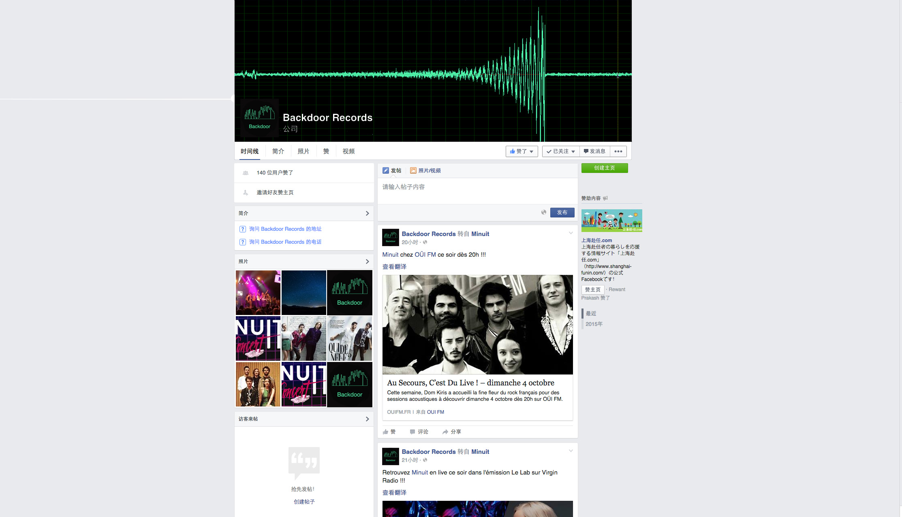
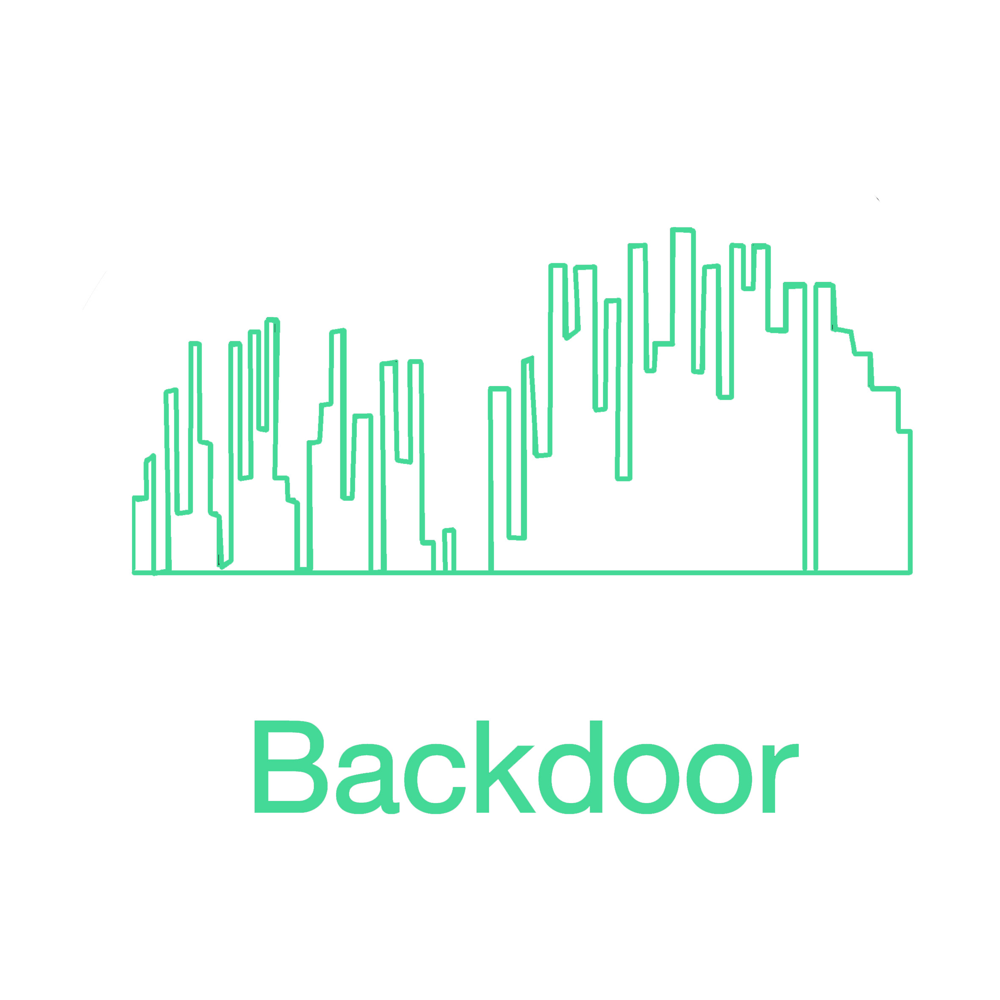

Backdoor Logo Proposal
by Jia Rong

I got my inspiration from the audio track on Minuit webpage. Audio track is a
good representation of record company.
I abstracted the shape of B to their shapes to lines and rectangles, which are
similar to audio tracks. I also chose the track color as my main logo color to make the
logo outstanding. The green is eye-catching on social media as a profile picture.
I used function of perspective to change the two parts of B to two open doors.
Finally, I add the brand name “backdoor” centralized below the icon.
In total, it gives out the sense of the sense of safety, creation and openness.

